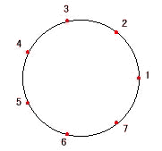
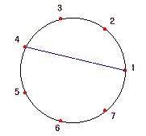
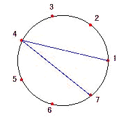
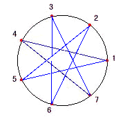

Regular m/n-Polygons
How to make regular m/n-polygon
The following figures show the example of drawing a regular m/n-polygon when m=7 and n=3.

1. Draw a circle.Mark m points on the circle so that the circle is divided into equal arcs. Number the points 1,2,3, ...., m counterclockwise.

2. Draw a line segment between the first point and the n+1 th point.

3. Draw a line segment between n+1 th point and 2n+1 th point.

4. Repeat the same process.
Applet
Activity
Find m and n that constructs the same polygon as m=5 and n=2.
Find the sum of the marked angles when m=5 and n=1.
Find the sum of the marked angles when m=5 and n=2.
Find the sum of the marked angles when m=7 and n=3.
Find the sum of the marked angles when m=7 and n=2.
Find the general formula for the sum of the marked angles.